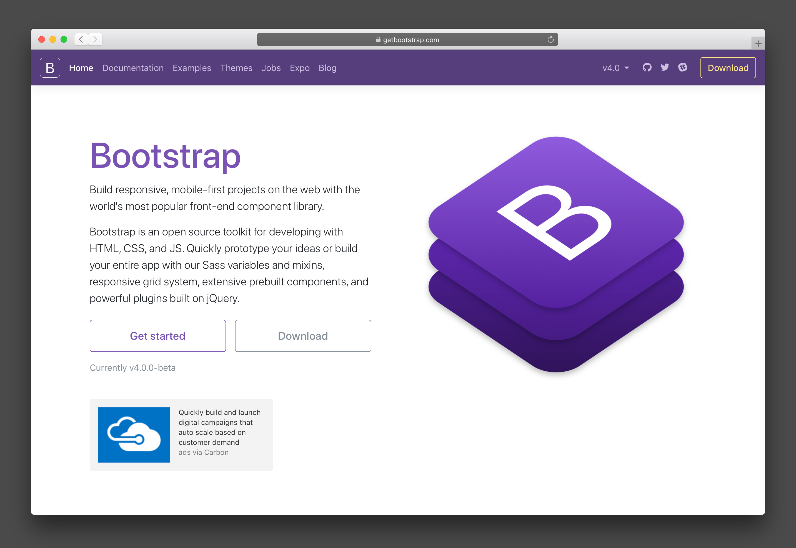

Responsive web design (RWD) is an approach to web design which makes web pages render well on a variety of devices and window or screen sizes. Recent work also considers the viewer proximity as part of the viewing context as an extension for RWD.[1] Content, design and performance are necessary across all devices to ensure usability and satisfaction. A site designed with RWD[2][6] adapts the layout to the viewing environment by using fluid, proportion-based grids, flexible images, and CSS3 media queries, an extension of the @media rule, in the following ways